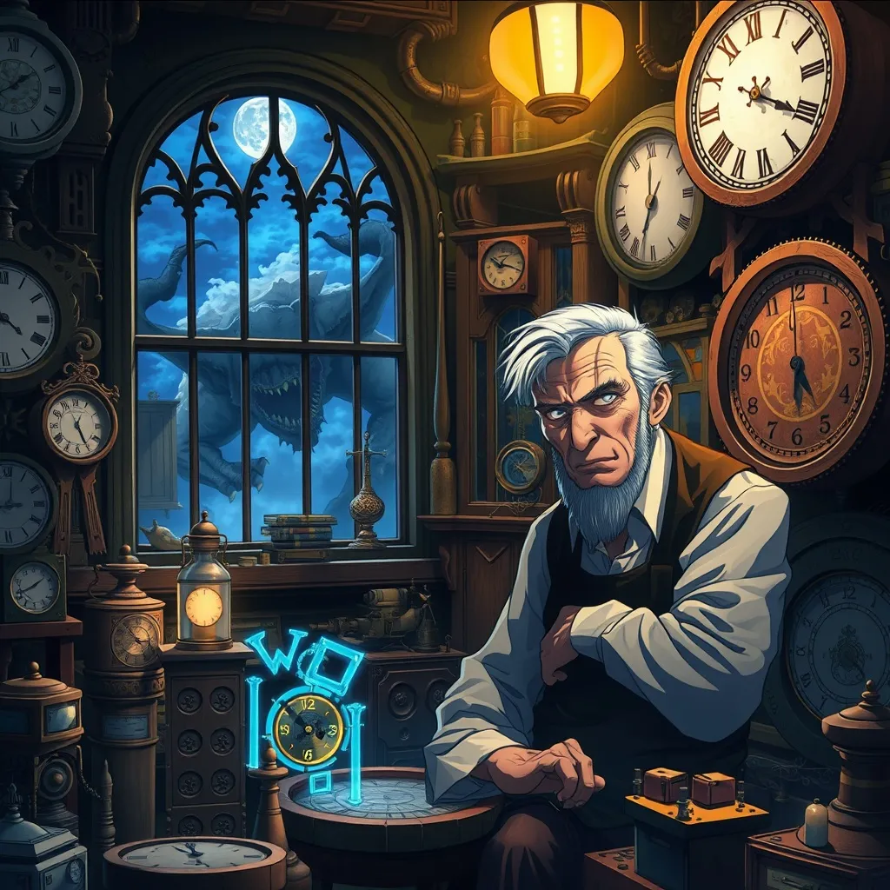

You are my star.
E-English is your world.
In a quiet town called Brindlewood, where cobblestone streets twisted like ribbons and lanterns glowed warmly at night, lived an old clockmaker named Elias. His shop was tiny, with shelves full of clocks of every shape and size, from grand grandfather clocks to delicate pocket watches. But Elias wasn’t just any clockmaker — he was rumored to create clocks that could do more than tell time. One rainy evening, a curious boy named Leo wandered into Elias’s shop. The smell of polished wood and oil filled the air. Clocks ticked in perfect harmony, creating a symphony of time. Elias noticed the boy staring at a peculiar clock in the corner — its hands moved backward, and golden numbers shimmered faintly in the dark. “That one,” Elias said softly, “is not an ordinary clock. It can show you moments from the past — but only the ones that matter most.” Leo's eyes widened. “Can I… see my past?” Elias nodded, carefully winding the clock. The hands began to spin backward, faster and faster, until the room blurred. Then, suddenly, Leo was standing in his childhood home, watching a moment he had forgotten — the day his father had taught him to ride a bicycle. The memory was vivid, filled with laughter, the scrape of his knees, and the warm encouragement of his father. Tears filled Leo’s eyes. “Why did you show me this?” he asked. Elias smiled gently. “Time is precious, Leo. We often forget the moments that shape us. This clock… it reminds us who we are and what we value.” Over the following weeks, Leo visited Elias regularly. He learned how to repair clocks, understanding their intricate gears and springs. Each clock had a lesson: patience, precision, and care. But the backward clock taught him something more profound — the importance of remembering, forgiving, and cherishing the people he loved. One day, Elias handed Leo a small, golden pocket watch. “This is for you. Use it wisely. It cannot change the past, but it can help you treasure the present and guide your future.” Leo left the shop with a heart full of wonder. He kept the watch close, always remembering the lesson of the clocks: life is made of moments, and every tick — every second — is a gift. And though the clocks continued to tick in the quiet Brindlewood shop, Leo carried their wisdom wherever he went, sharing it with everyone he met.
